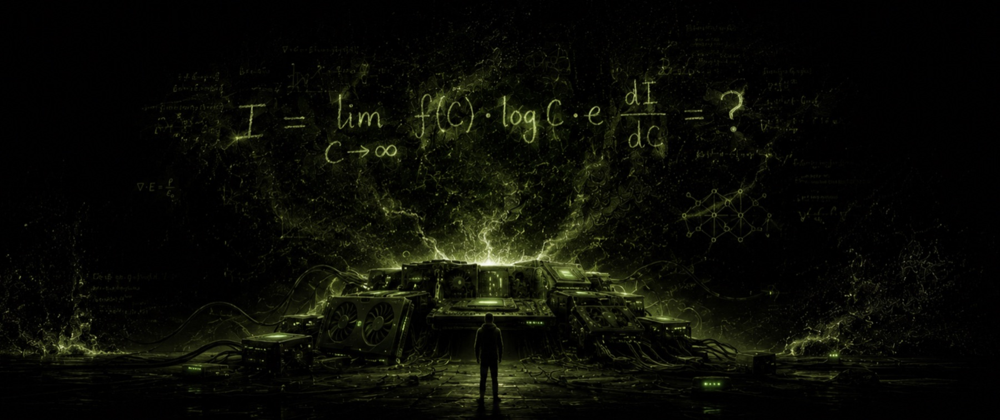
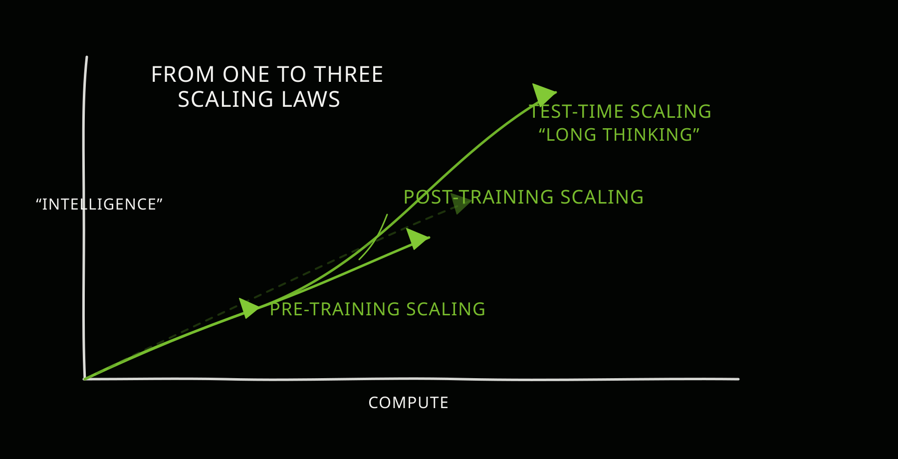

AI Is Still Awaiting Its Intelligence Equation

Human beings feed on negative entropy; only by doing so can we sustain ourselves in an environment forever tending toward greater entropy. The food and energy we take in each day are, at bottom, inputs of structured order: the body converts that order into the stability of living processes and expels the inevitable disorder outward, so that the individual can, for a while, find its footing within a far larger thermodynamic torrent. Because this experience of survival runs so deep, I can't help looking at artificial intelligence through the same lens-and the longer I look, the more absurd and the more fascinating it becomes. We hope to build an "intelligence" that turns high-entropy input into low-entropy information, that presses noise into knowledge and folds chaos into usable structure, while the only price, it seems, is the electricity, compute, and waste heat behind a string of tokens. At moments the whole enterprise looks uncannily like a modern act of sacrifice: we offer up electricity and silicon, chant incantations we don't fully understand ourselves, and await a blessing called "emergence"-as if AGI were not an engineering problem but a miracle to be summoned.
Today the most mainstream path to making this god is the so-called scaling law. The story it tells is seductive: make the model bigger, the data larger, the training longer, and capability will keep rising until, at some point, it crosses the threshold we call AGI. What makes this path reassuring is that it resembles a broad road indifferent to terrain-keep pouring in fuel, and you keep moving steadily forward. But what is unsettling comes from the very same premise, because the narrative tends to assume that resources can approach the "infinite": that data flows endlessly, that energy keeps coming, that compute can be stacked without limit. The real world, however, is made of ceilings. The total amount and availability of energy, the limits of chip fabrication and deployment, the accessibility and usefulness of data, society's tolerance for cost and power consumption-each of these can, at some moment, turn from a background condition into a decisive constraint. If the energy ceiling of this world, or of the universe, or the ceiling of power consumption we are willing to bear, is simply not enough to reach AGI by sheer scaling, then however beautiful the curve, it may be no more than fireworks drawn in the shape of a rocket.

From the standpoint of training, what we call learning can be understood as a kind of moving of entropy. Data carries the statistical regularities and structural information of the world; training lets a network's parameters absorb those regularities into a reusable internal representation. The more diverse the data and the larger the network, the richer the structure it can hold-which is why scaling works again and again. But working is not the same as being efficient. The real bottleneck is not only gravity but also oxygen; in other words, not only compute and training time, but data quality, data coverage, distribution shift, the complexity of how tasks combine, and the way a model spends computation at inference. Scale can push capability upward, but as the marginal returns begin to thin, we will eventually face a question: is there a smarter path, one that yields a greater gain in structure for the same investment?
I think the answer is still structure. Scale settles the dose; structure settles the reaction mechanism. Dose can make a model stronger, but mechanism decides where its strength lies, and whether that strength is elegant. An analogy from explosives makes this more vivid. In the age of black powder, humans used unrefined natural substances to obtain a brief, crude burst. In the age of chemical explosives, having understood finer reaction pathways, they used purification and synthesis to design more efficient, more controllable structures of release. And later still, once they understood structure at the atomic level, fission and fusion pushed the efficiency of energy release to heights no chemical reaction could ever reach. The core of each leap was not "using more" but "understanding more deeply"-it was insight at the level of structure that carried the same mass into an entirely different channel of energy.
But structure has never been mere talk divorced from scale, because the effect of a structure must be amplified before it can show itself. The atomic bomb and the hydrogen bomb each have a critical mass; below the threshold they are only physical material, and only past it do they become historical events. The same holds for AI: we need structure, because structure reflects our understanding of the origins of intelligence, and we need scale, because scale amplifies the potential of a structure into stable, reproducible capability. The trouble is that today we often place an almost religious trust in our existing structures, as if intelligence would descend on its own, like an oracle, so long as we keep scaling up training. More subtly, this trust is not groundless, because data and compute, offered up as sacrifices, really are partly effective, and engineering really does keep delivering returns. And precisely because it works, we lack sufficient motive to interrogate the deeper mechanism-to look for the thing that could guide the next leap in structure, an understanding closer to a "mass-energy equation." Without it, we will likely just keep adding more within the same structure, spinning our wheels.
I am not dismissing the scaling law; on the contrary, it remains our most reliable engine of gains and the source of many empirical regularities. What I want to stress is that we should not treat it as our only article of faith. The complexity of the world makes it unlikely that intelligence admits only a single mode of compression; behind language, vision, action, causality, planning, and social interaction there may lie different ways of organizing space and time, and different computable structures. If we try to swallow all of that complexity with a single skeleton, what we get may be an ever-larger approximator rather than something that draws ever closer to true understanding.
It becomes clearer if we bring the focus back to data itself. Data can be seen as entropy unfolding across space and time; it records projections and samplings of the world at different scales. A network's architecture is the skeleton we build for that unfolding, and the skeleton decides which regularities are easy to capture, which structures get ignored, which compressions come naturally, and which compressions cost dearly. Learning is not merely fitting curves; it is more like extracting reusable fragments of structure from data and organizing those fragments at a higher level-comparing structures, transferring structures, reusing structures, even building structures of structures. Ilya's line that compression is intelligence is moving because it pulls intelligence back onto the bedrock of information theory; but compression is not free, and every compression format has its preferences and its blind spots. On time series, an MLP often struggles to model effectively-not because it cannot compute, but because it lacks an inductive bias for temporal structure. An RNN can handle sequences because it has the assumption that the past shapes the future built in, yet real dependencies are not always a one-way chain. The Transformer is powerful because it assumes that structure can be embedded in a vector space and that relationships can be extracted efficiently through attention, which lets it capture complex spatiotemporal relations more flexibly-though that does not make it naturally optimal for every structure.
This raises a harder question. Behind every kind of data lies a corresponding spatiotemporal structure and mode of compression; could we have a more unified structure-one that frees a model from relying on explicit human-language labels to supervise structure, and instead lets it form a general way of organizing computation more naturally over the course of training? I don't know the final answer, but I lean more and more toward one direction: rather than carving the world into labels with language and then forcing a model to learn, we might build a more general computational structure into the model, giving it the ability to generate structure, not merely to fit within a fixed one. The brain is a good reminder. Neurons matter, of course, but what matters more is the multi-scale structure and dynamics they evolved over a very long time. Language looks more like a symbolic tool invented later for survival-powerful, yet not necessarily the deepest bedrock of intelligence.
So when, in a physical world of rising entropy, we pursue an AGI that appears to lower entropy, the pursuit itself does carry a certain romance. Only, romance should not become a reason to stop thinking. We can keep pushing scaling to its limit, because it is steady and it works; but at the same time we ought to give some of our attention to structure, some of our resources to mechanism, and some of our ambition to the search for what is essential. Rather than enlarging the offering again and again in wait of a miracle, we would do better to understand, more honestly, the physics and computation behind the altar-so that the next so-called emergence looks less like a blessing of chance and more like an explicable necessity.